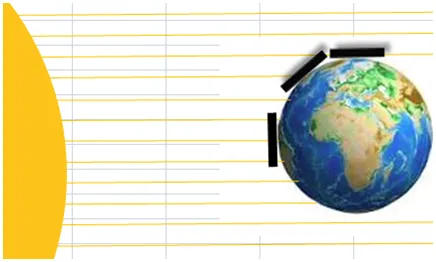
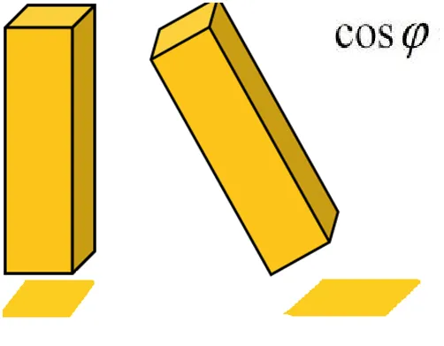
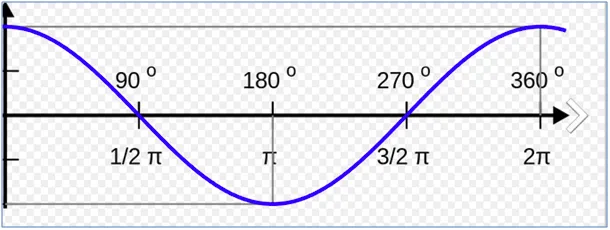

Wszytko w Kosmosie dzieje się przez ten nielubiany “kosinus fi”.
Zima, lato, w tych okresach Ziemia jest w bardzo podobnej odległości od Słońca, skąd zatem takie różnice temperatur. Możemy w praktyce przyjąć, że zimą i latem do Słońca mamy ten sam dystans a cała zagadka jest ukryta w kształcie Ziemi. Wielka kula, tak duża, że z naszej perspektywy wydaje się płaska. I tu jest rozwiązanie, spójrzmy na naszą okolicę jak na płaskie pole.

Gdy np. w marcu Słonce pionowo świeci na równik, kąt promieni do powierzchni to 90 stopni, kąt prosty, lepiej być nie może. Gdy sobie wyobrazimy wiązkę promieniowania, w tym cieplnego, wykrojonego w przestrzeni kwadratem o rozmiarach 1x1 m, wiązka taka tworzy na równiku dokładnie kwadrat o tych samych wymiarach i ogrzewa ten kwadrat pola. Taka sama wiązka, gdy dociera do północnej Polski, na 50 równoleżnik pada pod kątem 50 stopni i tworzy prostokąt o wymiarach 1 m na x 1,156 metra. Dlaczego 1,156 m ? Bo to jest równe 1/0,6428, czyli 1/cos(fi) (kosinus fi, fi to ten kąt ). Kosinusy i sinusy policzono już tysiące lat temu i były zebrane w tablicach.

Słońce świecące pod kątem taką samą porcją energii musi obdzielić większe pole, tym samy natężenie anergii na jednostkę powierzchni jest mniejsze. Po ludzku, słabiej grzeje.

Skrajną sytuację mamy w tym dniu na biegunie, gdzie kąt padania promieni słonecznych wynosi 0 stopni, kosinus tego kąta to też zero i efekt grzewczy równy zero. Promienie "prześlizgują" się po biegunie. Opisałem sytuację modelową, mnóstwo niuansów, którym nie poruszyłem ma znacznie pomijalne dla odczuć termicznych. W opisanym dniu na biegunie można się opalać stojąc pionowo, twarzą do Słońca, wtedy kosinus mamy maksymalny.
Paweł Klimczewski